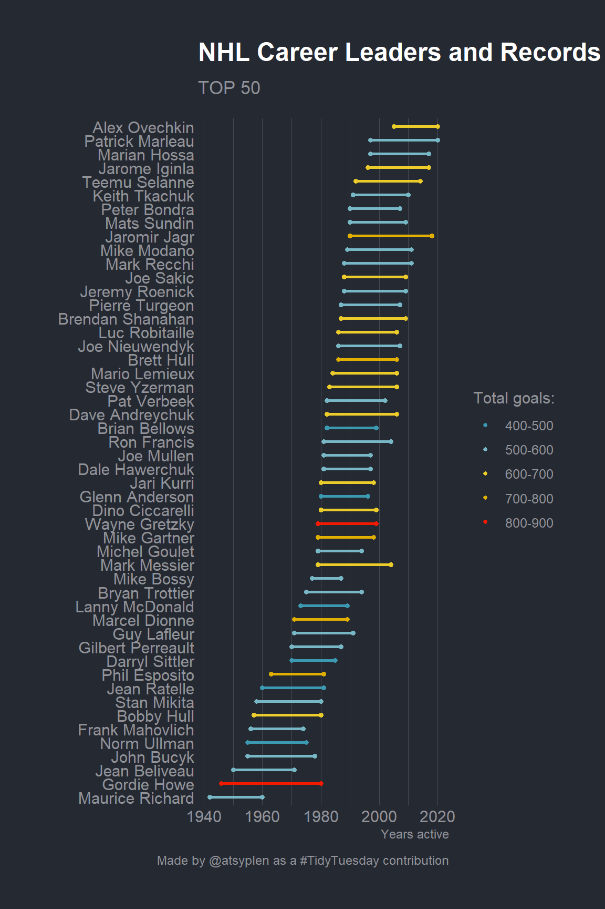

Okay, here it is. My first contribution to the my website. I’ll try to make a very quick and simple data exploration analysis for this weeks’ Tidy Tuesday. There are three datasets available. I’m not sure that I’ll be able to analyze all of them… Let’s start from the first top_250.
# A tibble: 251 × 9
raw_rank player years total_g…¹ url_n…² raw_l…³ link active yr_st…⁴
<dbl> <chr> <chr> <dbl> <dbl> <chr> <chr> <chr> <dbl>
1 1 Wayne Gretzky 1979-99 894 1 /playe… http… Retir… 1979
2 2 Gordie Howe 1946-80 801 2 /playe… http… Retir… 1946
3 3 Jaromir Jagr 1990-18 766 3 /playe… http… Retir… 1990
4 4 Brett Hull 1986-06 741 4 /playe… http… Retir… 1986
5 5 Marcel Dionne 1971-89 731 5 /playe… http… Retir… 1971
6 6 Phil Esposito 1963-81 717 6 /playe… http… Retir… 1963
7 7 Mike Gartner 1979-98 708 7 /playe… http… Retir… 1979
8 8 Alex Ovechkin 2005-20 700 8 /playe… http… Active 2005
9 9 Mark Messier 1979-04 694 9 /playe… http… Retir… 1979
10 10 Steve Yzerman 1983-06 692 10 /playe… http… Retir… 1983
# … with 241 more rows, and abbreviated variable names ¹total_goals,
# ²url_number, ³raw_link, ⁴yr_start
# ℹ Use `print(n = ...)` to see more rows
This dataset contains 250 NHL & WHA career leaders and records for goals. First, we’re going to tidy our dataset a bit. What is the most interesting here is total goals really depends on the career length?
The information about years of career contains in years variable. It has a structure of YYYY-YY. First of all, let split it to year_start and year_end.
# A tibble: 251 × 4
player total_goals year_start year_end
<chr> <dbl> <dbl> <dbl>
1 Wayne Gretzky 894 1979 1999
2 Gordie Howe 801 1946 1980
3 Jaromir Jagr 766 1990 2018
4 Brett Hull 741 1986 2006
5 Marcel Dionne 731 1971 1989
6 Phil Esposito 717 1963 1981
7 Mike Gartner 708 1979 1998
8 Alex Ovechkin 700 2005 2020
9 Mark Messier 694 1979 2004
10 Steve Yzerman 692 1983 2006
# … with 241 more rows
# ℹ Use `print(n = ...)` to see more rows
Great! Now we have a very tidy dataframe. However, if we are going to plot career length of all 250 players, it can be a total mess on the plot. Let’s select only first 50 players using dplyr::top_().
Code
tidy_50 <- tidy_250 %>%top_n(50, total_goals)
I prefer to use discrete color scale instead of continuous. So I’m going to convert total_goals into factor. I really like to do it interactively with a new questionr package! So easy!
Okay, so everything is ready for a plot! Please, notice, that I’ve already set the ggplot theme in the first r chunk via theme_set. I prefer to use dark themes everywhere so for this post I’ll also use a dark one. Bob Rudis (hrbrmstr) has created a really nice one in his hrbrthemes.
Code
library(ggalt)library(paletteer)tidy_50 %>%mutate(len = year_end - year_start) %>%mutate(player =fct_reorder(player, year_start)) %>%ggplot(aes(x = year_start,xend = year_end,y = player,group = player)) + ggalt::geom_dumbbell(aes(color = total_goals_rec),size_x =1.3,size_xend =1.3,size =1) +labs(x ="Years active", y ="",title ="NHL Career Leaders and Records for Goals",subtitle ="TOP 50",caption ="Made by @atsyplen as a #TidyTuesday contribution") + paletteer::scale_color_paletteer_d(name ="Total goals:","wesanderson::Zissou1") +theme(panel.grid.major.y =element_blank())

Let’s create a bit more meaningful plot. It’s very interesting how total_goals are spread inside career lengths groups! For this one I’d prefer a boxlplot.